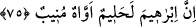

Lût (a.s.) İbrahim (a.s.)’ın yeğeni olup tam adı şöyledir: Âzer oğlu Âzûr oğlu Lût.
İbrahim de Âzer’in oğludur. Lût’un İbrahim’in amcasının oğlu, Sâre’nin de Lût’un kız
kardeşi olduğu da söylenir.
İbrahim (a.s.) ve Sâre, Lût kavminin helâk olacaklarını duyunca Lût için endişe ettiler.
Elçiler: “Şüphe yok ki biz bu kasaba halkını helâk edeceğiz.” (Ankebût, 29/31)
deyince İbrahim (a.s.) onlarla tartışmaya başladı ve “Peki onların arasında elli tane
mü’min varsa, bu kavmi yine de helâk eder misiniz?” dedi. “Hayır” dediler. “Peki kırk
kişi varsa?” deyince yine “Hayır” dediler. “Otuz kişi varsa” deyince tekrar “Hayır”
dediler. Nihayet beşe kadar düşüp de yine “Hayır” deyince İbrahim (a.s.): “Peki orada
bir tane müslüman varsa, bu kavmi helâk eder misiniz?” dedi. Elçiler yine “Hayır”
deyince İbrahim (a.s.): “Tamam işte orada Lût var.” dedi. Elçiler de: “Biz orada
kimlerin olduğunu çok iyi biliyoruz. Onu ve âilesini elbette kurtaracağız.”
(Ankebût, 29/32) dediler.
75. İbrâhim gerçekten yumuşak huylu, bağrı yanık, kendisini Allah’a vermiş
birisidir.
“İbrâhim gerçekten yumuşak huylu” Kendisine kötülük edenlerden intikam almakta
aceleci olmayan, “bağrı yanık” günahlara karşı çok âh u vâh eden, insanların durumuna
üzülen birisidir. Rebîü’l-ebrâr’da şöyle denilir: “et-Teevvüh’ün mânâsı, Nabatça’ya
uygun olarak Allah’a duâ etmektir.”
“kendisini Allah’a vermiş birisidir.” Rabbine, O’nun sevip râzı olduğu şeylerle
yönelendir.
Yâni İbrahim (a.s.)’ın bu tartışması, Lût kavminin durumuna üzülmekten ve halim,
yumuşak huylu olmaktan ileri gelmiştir. Çünkü kendisine, eziyet edenlere bunun
karşılığını vermekte acele etmeyen kimse, başkalarının başına sıkıntılı hallerin geldiğini
duyunca acır, âh vâh eder. Bununla birlikte o bütün hâl ve tavırlarında Allah’a yönelir.
Yani bazı davranışlarının temelinde nefsânî haz şâibeleri olmayıp bütün tutum ve
davranışları sırf Allah içindir.
Böylece şu anlaşılmış oldu ki İbrâhim (a.s.)’ın kalbinin rikkati, onu Lût kavmi
hakkında elçilerle tartışmaya sevk etmiştir. Belki bu tartışma sonucu onlardan azap
kaldırılır, kendilerine biraz mühlet verilir de tevbe ederler, Allah’a yönelirler diye
düşünmüştür. Nitekim aynı rikkat onu babası için istiğfar etmeye sevk etmişti.
Fakir (Bursevî) şöyle der: 74. âyet bu tartışmanın Lût kavmi hakkında olduğuna
delâlet ederken tefsirler bizzat Lût ve beraberindeki mü’minler hakkında olduğuna
delâlet ediyor. Bu ikisi arasında bir zıtlık bulunmamaktadır. Çünkü İbrâhim (a.s.)’ı
tartışmaya sevk eden acıma duygusu, peygamberlerin fıtratında mevcuttur. Birine acıyıp